Concierge Travel Portal
Bringing together scalable technology and white-glove travel service for clinical trials.
When Greenphire acquired Clincierge, we gained a powerful travel model—but no scalable way to share it. I transformed their internal tool into the Concierge Travel Portal: a secure, intuitive space for Coordinators and Travel Agents to manage complex participant travel without relying on email.
This portal helped launch a white-glove service tier and address the top barrier to clinical trial participation—travel. The work was high-profile and led to a pending patent, where I’m listed as a co-inventor.
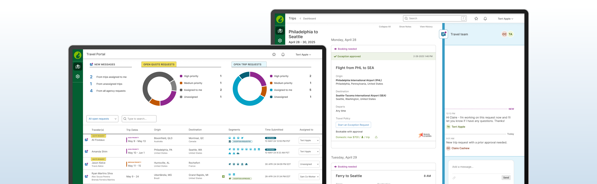
The challenge
Greenphire builds tools that streamline the operational side of clinical trials—site payments, participant reimbursements, and travel logistics. Newly acquired Clincierge brought deep expertise in high-touch travel support for patients in rare and ultra-rare disease studies. Our challenge: design a seamless experience that merged Greenphire’s tech-driven platform with Clincierge’s human-centered services.
At the center of it all was PX, Clincierge’s internal tool built for trained Coordinators. The goal was to turn it into a secure, easy-to-use portal that could also support two new external roles: Travel Agents and Site Staff. Since we couldn’t rely on training, the experience had to be intuitive from the start. That meant rethinking how information was organized, redefining trip states, and designing clear, helpful interfaces to guide users through complex workflows.
Discovery
Research was the cornerstone of this phase. I partnered with my Product Manager and UX Strategist to observe how Clincierge Coordinators and Travel Agents used the existing PX platform, surfacing key friction points and gaps in the workflow.
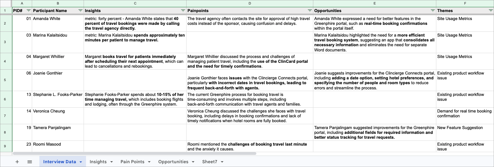
We identified three strategic goals:
- Unify PX with Greenphire’s platform
- Eliminate email-based communication
- Create an intuitive experience for newly onboarded roles
Early technical constraints, like the lack of real-time chat, helped shape our feature scope. To broaden our thinking, I looked to tools outside life sciences, like Airbnb, Slack, and Microsoft Teams, analyzing how they structure travel, messaging, and task flows to guide intuitive use.
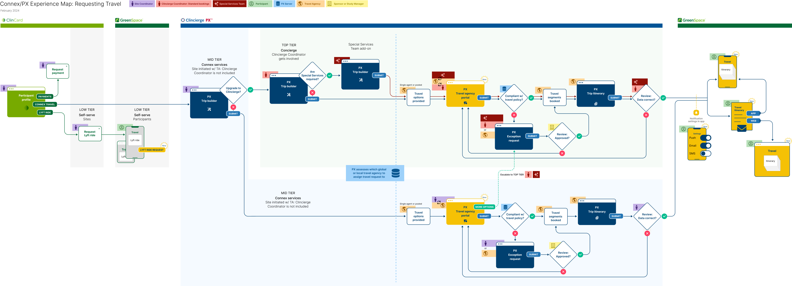
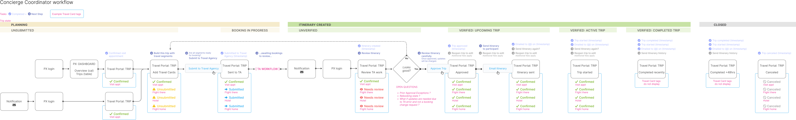
Define
Trip states + travel segment tags
To bring clarity and consistency to how trips are managed, I partnered with product and engineering to redefine trip states and expand travel segment tags. This work aligned the UI with backend logic and ensured both Travel Agents and Coordinators could quickly understand where each trip stood—from initial request to final booking. The updated structure also supported better filtering and prioritization across dashboards. The visual maps below show the full lifecycle of a trip, along with the tailored segment tags used by each role to track and manage their tasks with confidence.
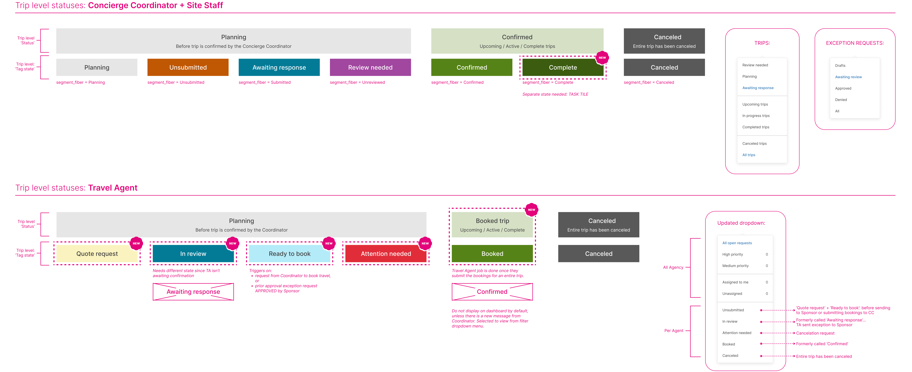
To support this logic, I created visual maps that break down trip-level statuses and travel segment stages by user role—helping teams quickly understand scenarios like a trip still in planning with one flight to book, a hotel confirmed, and a ferry segment canceled.
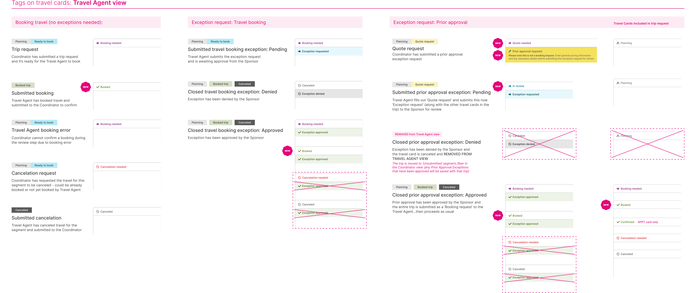
Design
Wireframing the portal architecture
I began with wireframes to shape the overall structure of the Dashboard and Trip Page—focused on surfacing the right information at the right time.
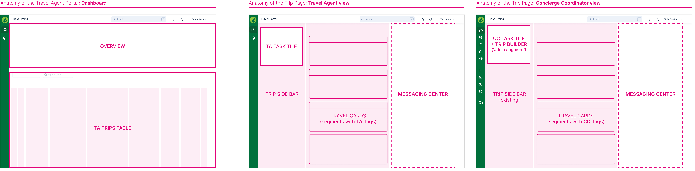
Designing for clarity and complexity
Through iterative design, I moved into high-fidelity mockups that prioritized clarity, hierarchy, and ease of navigation for both Travel Agents and Coordinators managing high-stakes logistics.
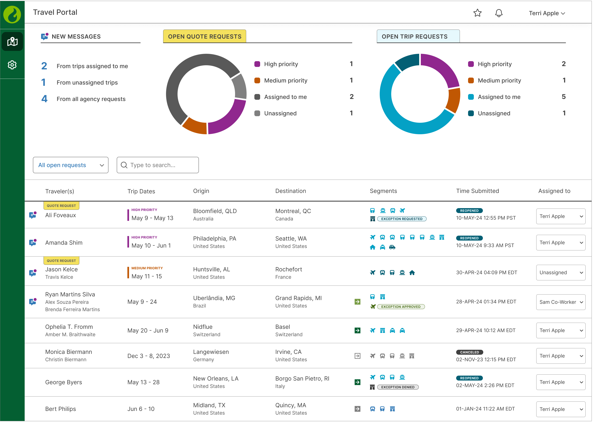
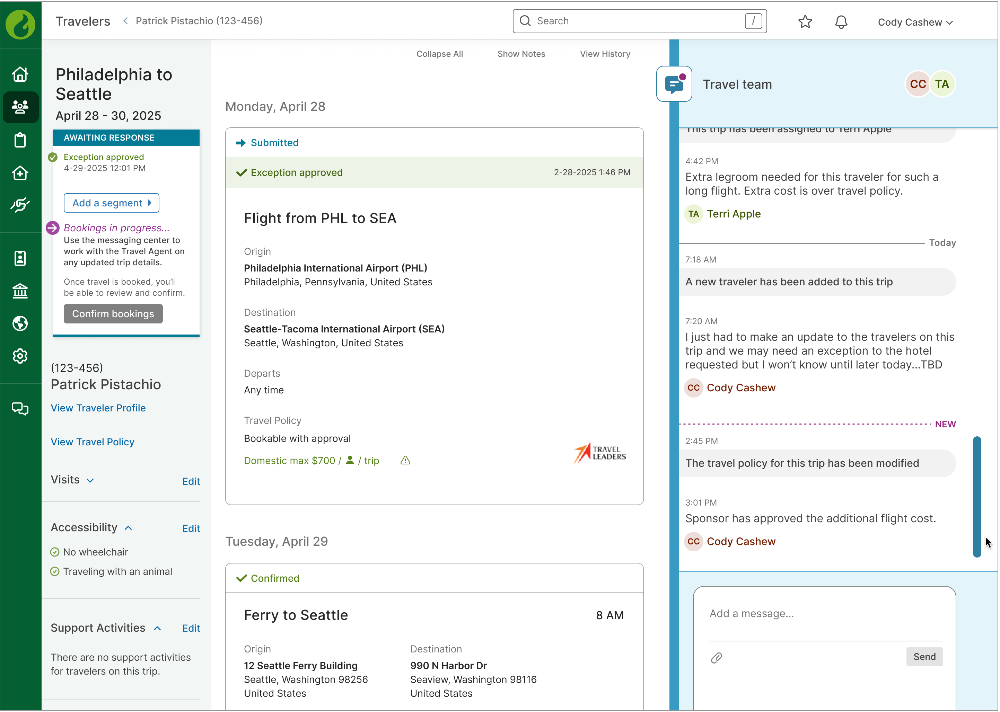
A Messaging Center for the Travel Team
To replace email and keep sensitive participant data secure, I designed an integrated Messaging Center tailored for cross-role collaboration. It enables Travel Agents, Site Staff, and Concierge Coordinators to communicate directly within the portal—bringing structure, transparency, and compliance to previously fragmented workflows.
In addition to human-to-human messages, the system also delivers automated updates—keeping all parties informed of key trip actions and status changes. These system messages help ensure no detail is missed, and that the right people are looped in at the right time.
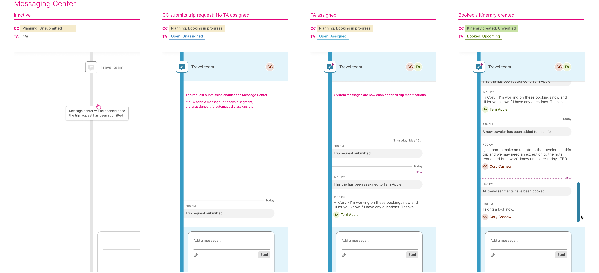
Although we didn’t have time for formal user testing before launch, I designed with validation in mind—using familiar interaction patterns and clear UX hierarchy to support first-time users. Future iterations will focus on usability testing of the messaging and task systems to refine and extend the experience.
Develop
I finalized the design specs and interaction logic for the Travel Agent Dashboard and Messaging Center—reusing existing PX patterns where possible to keep development moving quickly. I applied the new, WCAG 2.1 AA accessible product palette I created in a separate epic, and built out a system message framework to keep communication clear and consistent. I also created a content matrix for system-generated messages based on trip state and urgency—used to define delivery rules, escalation logic, and consistent messaging across roles.
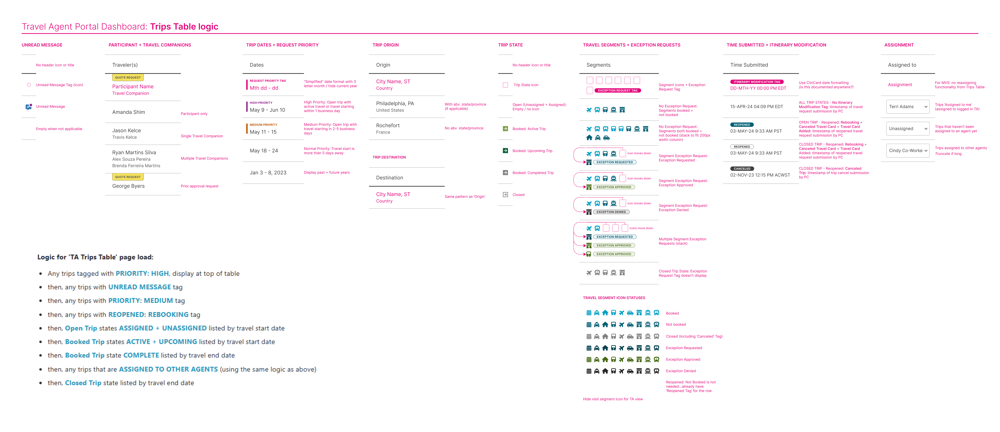
Deploy
We're currently in the early stages of deployment, with a pilot launch that began in May 2025 through a partner agency. While a full rollout is still to come, we're already seeing Travel Agents and Coordinators using the portal to manage real trips—providing early validation of the experience.
This was a high-profile initiative across Greenphire. Our team was selected to present the Concierge Travel Portal company-wide, helping build cross-functional alignment and momentum. I led the development of the narrative and visual storyboard for the live demo, ensuring the integration story was clear, strategic, and easy to rally around.
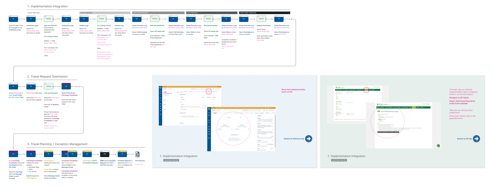
Impact
This project unified two legacy systems into a single, seamless experience—designed to support the complex travel needs of clinical trial participants. We launched a scalable portal that replaced manual, email-based workflows, improving efficiency, reducing errors, and keeping sensitive healthcare data secure and compliant.
The streamlined trip request process accelerated bookings and strengthened Greenphire’s ability to support rare and high-touch trials. With a soft launch underway through our partner agency, Travel Leaders, we’re actively gathering feedback to guide future enhancements.
The innovation behind this solution led to a patent submission (currently under review) with my first-ever listing as an inventor.
Role
Lead Designer
I led the integration strategy for Clincierge’s internal platform into Greenphire’s product ecosystem over a six-month design and development cycle. From concept to launch, I partnered closely with Product, Engineering, and Operations to shape the roadmap and design the Concierge Travel Portal, applying a systems thinking approach to define scalable UX patterns that support future growth.
Along the way, I created key UX frameworks—including trip states, travel segment tags, task tiles, and a messaging system—that now enable real-time coordination across multiple user roles. I also developed the narrative and visuals for our company-wide live demo, helping align stakeholders around this high-profile release.
Team: Senior Product Manager, Product Development Manager, Engineering Team of 3, QA Specialist, Director of Innovation, VP of Mobile Applications
Reflection
Clarity in storytelling builds confidence in the work. I really enjoyed helping the team tell the story of what we built. Crafting a clear narrative for the live demo helped showcase the value of the PX integration and the Concierge Travel Portal in a way that was easy to understand and exciting to share — and it really elevated the visibility of the team’s work.
This project showed me how systems thinking, strong cross-functional collaboration, and clear storytelling can shift how a company supports complex, high-touch service models at scale.
Looking ahead, I’m excited to evolve the portal into a more proactive and user-centered tool. Real-world feedback will guide the next phase of design, with a focus on simplifying coordination across the clinical trial journey.